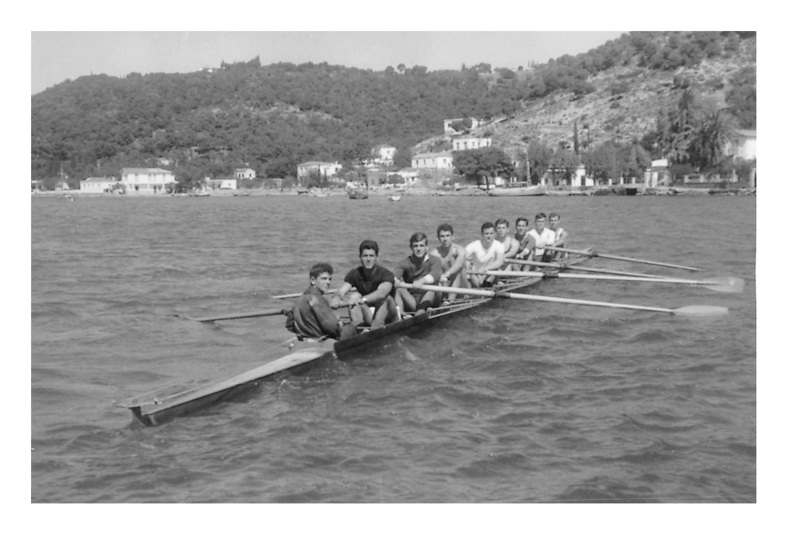

Κωπηλασία
Η κωπηλασία προήλθε από την ανάγκη του πρωτόγονου ανθρώπου να ξεπεράσει φυσικά εμπόδια διασχίζοντας ποτάμια και λίμνες είτε γιατί έπρεπε να επιβιώσει είτε για να ανακαλύψει νέους τόπους. Ιστορικό ορόσημο στην πορεία εξέλιξης της κωπολησίας κατά το 5 αιώνα αποτέλεσε η τριήρης , το πολεμικό αυτό σκάφος που αποτέλεσε τη σπονδυλική στήλη του Αθηναϊκού στόλου και την κύρια αιτία κυριαρχίας των Αθηναίων στο Αιγαίο. Στη σύνχρονη εποχή το άθλημα της κωπηλασίας πρωτοεμφανίζεται το 1716 στην Αγγλία .Το 1793 διεξάγονται οι πρώτοι πανεπιστημιακού επιπέδου κωπηλατικοί αγώνες ενώ το 1929 καθορίζει την έναρξη της παραδοσιακής ετήσιας λεμβοδρομίας μεταξύ των Πανεπιστημίων στο Cambridge και της Oxford.
ΤΑ ΣΚΑΦΗ
Οι αγώνες πραγματοποιούνται σε υδάτινο περιβάλλον λίμνη ή θάλασσα γεγονός που καθιστά την κωπηλασία διαφορετική από τα άλλα αθλήματα. Τα σημερινά σκάφη κωπηλασίας μπορούν να χαρακτηριστούν ως, ένα σύνολο τεχνολογικών επιτευμάτων, η κατασκευή των οποιών στηρίζεται στις αρχές της υδροδυναμικής ώστε όσο το δυνατόν στενότερα και ελαφρύτερα. Στο κύριο μέρος βρίσκονται οι μεταλλικές βάσεις στήριξης του κουπιού οι σκαλμοί, όπου ανάλογα με τη θέσηκαι τον αριθμό τους διαφοροποιούνται τα σκάφη και τα αγωνίσματα της κωπηλασίας. Έτσι, αν ένα σκάφος αποτελείται από δύο σκαλμούς δύο κουπιά και έναν αθλητή αντίστοιχα ονομάζεται σκιφ, δύο αθλητές διπλό και τέσσερις τετραπλό. Ενώ αν ένα σκάφος αποτελείται από δύο μεγαλύτερου μεγέθους σκαλμούς με δύο μεγάλα κουπιά που αντιστοιχούν ένα για κάθε αθλητή ονομάζεται δίκωπος, με τέσσερις αθλητές τετράκωπος και με οχτώ οκτάκωπος. Μεταβαίνοντας στα ελληνικά δεδομένα η κωπηλασία πρωτοεμφανίζεται το 1885 στον Πειραιά. Το 1927 ιδρύεται η Ελληνική Κωπηλατική Ομοσπονδία αλλά ήδη από το 1906 διεξάγονται οι πρώτοι Πανελλήνιοι αγώνες.
